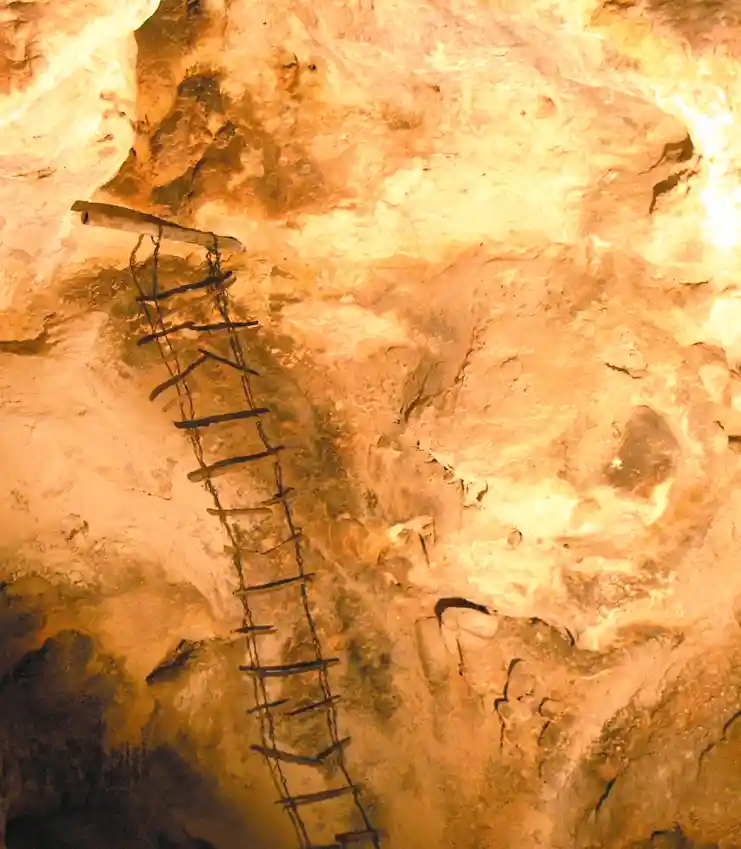
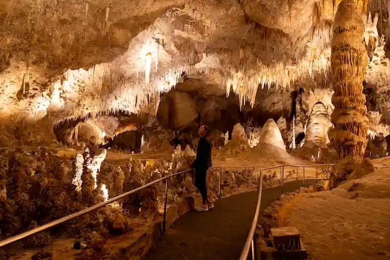
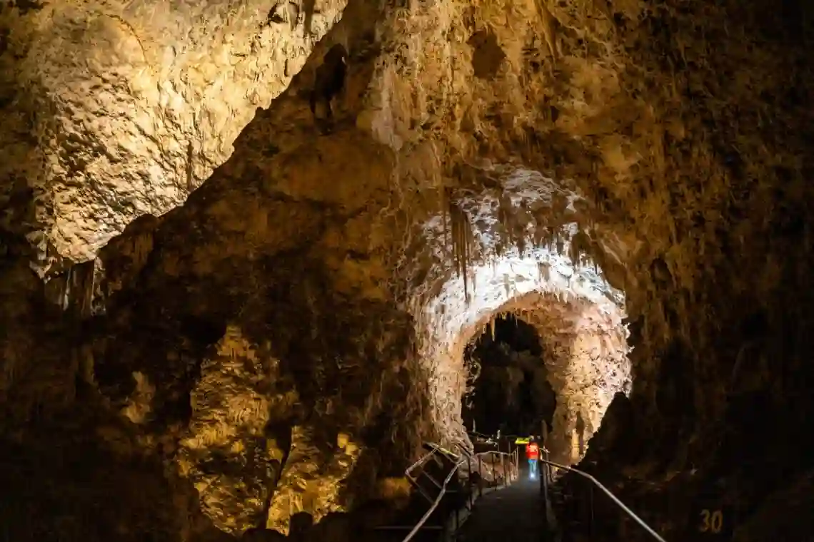

Timeline
- Prehistoric (12,000+ years ago)
Indigenous peoples lived in the area; pictographs near the cave entrance show early human awareness of the caverns. - 1883 (possible early sighting)
A young boy is reportedly lowered into the cave, though exploration was limited. - 1898 – First major exploration
Jim White enters the cave using a homemade wire ladder and begins mapping and naming formations.
- 1903 – Guano mining begins
The cave is commercially used for bat guano (fertilizer), helping expand exploration inside.
- 1915–1918 – First photographs
Ray V. Davis photographs the cave, bringing national attention. - 1923 – National Monument established
President Calvin Coolidge designates it Carlsbad Cave National Monument. - 1925 – First visitor access improvements
Wooden stairs and trails are built, replacing dangerous guano bucket entry. - 1927 – Electric lighting installed
Early lighting systems allow safer and more practical tour visits. - 1930 – National Park status
Officially becomes Carlsbad Caverns National Park. - 1931–1932 – Elevator construction
First elevator shaft blasted and installed, allowing easy access 750 feet underground. - 1932 – Visitor center opens
Includes elevators, cafeteria, and improved infrastructure for tourism. - 1930s–1940s – Major infrastructure work
The Civilian Conservation Corps builds roads, railings, rock walls, and trails inside and outside the cave.
- 1950s – Trail modernization
Dirt paths replaced with paved walking trails and improved railings for safety.
- 1954–1955 – Second elevator system
Larger elevators installed to handle increasing visitor traffic. - 1959 – Modern visitor center completed
Central hub for tours and park operations. - 1963 – Bat Flight Amphitheater built
Seating added for viewing the famous bat flights at the cave entrance. - 1972 – Self-guided tours introduced
Visitors can explore more freely instead of only guided tours. - 1970s – Elevator and lighting upgrades
Systems modernized; emergency lighting added. - 1995 – UNESCO World Heritage Site
Recognized globally for natural significance. - 2000s–present – Continued upgrades
Elevator systems, visitor facilities, and preservation efforts updated for modern tourism.